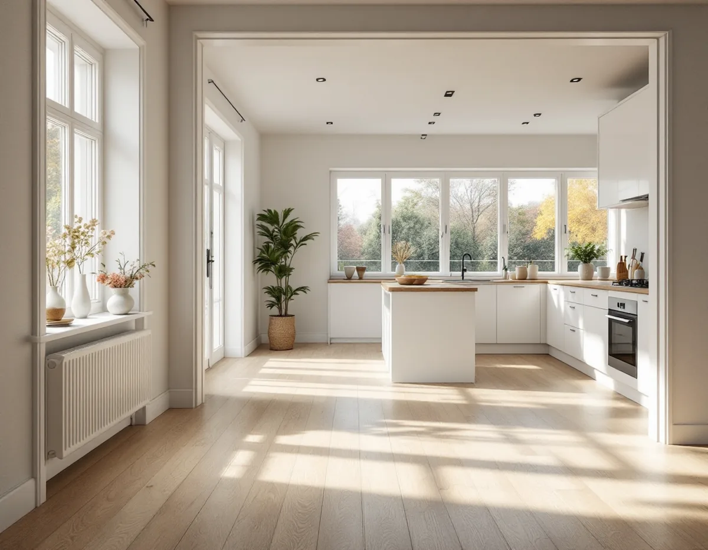
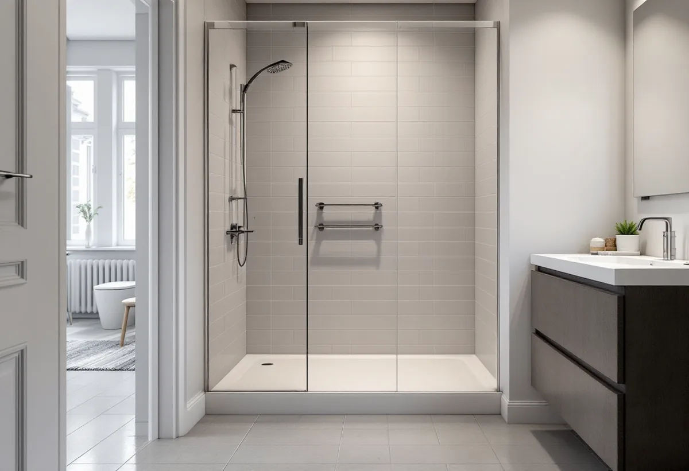
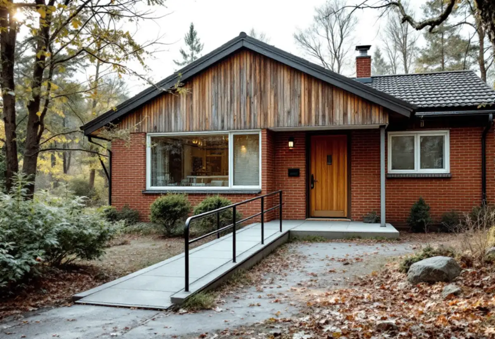

Platsbesök
Vi går igenom hur du rör dig i huset: entré, trappor, dörrar och badrum.

När ett hus ska totalrenoveras är det ett bra tillfälle att tänka på hur det ska fungera om några år, när trösklar, trappor och ett trångt badrum kan bli ett hinder.
Beskriv jobbet kort.
Något blev fel. Kontrollera uppgifterna eller ring 08 12 410 276.
Vi tittar på jobbet på plats innan du får offert.
Du ser vad som ingår och vad det kostar.
Vi drar av ROT direkt och sköter ansökan.
Geal Entreprenad AB, Bromma. Org.nr 559303-7566.

Geal Entreprenad AB totalrenoverar villor och radhus i Täby och tar med framkomligheten i planen från början.
Boverkets handbok om bostadsanpassningsbidrag ger exempel på vanliga anpassningar: att ta bort trösklar, ordna en duschplats i stället för badkar, installera en spisvakt, bygga en ramp till entrén och bredda dörröppningar. Täby kommun nämner också stödhandtag, anpassade badrum och dörrautomatik. Det handlar om att kunna förflytta sig inomhus och ta sig in i och ut ur bostaden.
Många av de ändringarna rör just de delar som ändå byggs om i en totalrenovering. När innerväggar rivs och byggs upp igen kan dörröppningarna göras bredare. När golven läggs om kan nivåskillnaderna mellan rummen tas bort. När badrummet görs om kan duschen hamna i golvnivå med plats att röra sig runt. Att planera för det från början är oftast enklare än att bygga om en färdig yta senare.

Har du en bestående funktionsnedsättning och behöver anpassa bostaden för att kunna bo kvar kan du söka bostadsanpassningsbidrag hos Täby kommun. Bidraget gäller fasta funktioner, och behovet ska inte kunna lösas på ett enklare sätt, till exempel med hjälpmedel. Du ansöker i kommunens e-tjänst och bifogar ett intyg från arbetsterapeut, fysioterapeut, läkare eller annan medicinskt sakkunnig som styrker att åtgärderna är nödvändiga.
Kommunen skriver att det är den som ansöker som är beställare av arbetet, och att konsumenttjänstlagen därför gäller mellan dig och den entreprenör som utför det. Bidraget betalas ut när åtgärden är slutförd. Boverket påpekar att man normalt söker innan något görs. Det går att söka i efterhand, men då kan det vara svårare att utreda om villkoren är uppfyllda. Kommunen ska inte heller bedöma din ekonomi. Bidraget omfattar i princip alla typer av funktionsnedsättningar, till exempel rörelsenedsättning, nedsatt syn eller allergi, men nedsättningen ska vara bestående eller åtminstone långvarig. Täby kommun skriver att handläggaren kan hjälpa dig att ta in offerter och fastighetsägarens medgivande.
Enligt lagen om bostadsanpassningsbidrag lämnas inget bidrag om åtgärderna behövs på grund av byggnadstekniska brister, eftersatt underhåll, avsaknad av eller avsevärda brister i grundläggande bostadsfunktioner eller avvikelser från bygglagstiftningens krav på tillgänglighet. Den sista punkten gäller bara när sökanden själv har låtit uppföra eller ändra huset. Om en ombyggnad som du beställer avviker från tillgänglighetskraven kan du alltså inte räkna med bidrag för att rätta till just det senare.
Boverket betonar samtidigt att omodernt inte är en avslagsgrund. Ett äldre kök med lägre diskbänk som fungerade innan funktionsnedsättningen bör kunna anpassas med bidrag. Vid bedömningen av eftersatt underhåll ska delarna bedömas utifrån hur de användes före anpassningen. Därför håller vi isär det som är renovering och det som är anpassning i planen, och bygger det som ändras så att tillgängligheten inte blir sämre.
Täby kommun påpekar att den som byter bostad förväntas välja en som passar ens förutsättningar. Den som inte klarar trappor och flyttar till ett hus med trappor kan inte få bidrag för en trapphiss. För dig som vill stanna i huset du har kan en totalrenovering vara tillfället att samla sovrum, badrum och kök på entréplanet. Om badrummet finns mer under badrumsrenovering i Täby, om köket under köksrenovering i Täby, om golvet där en vägg har rivits under golvslipning i Täby och om större ombyggnader på sidan om villarenovering.
Vi går igenom hur du rör dig i huset: entré, trappor, dörrar och badrum.
Renovering och anpassningar läggs i samma plan, med dörrbredder och golvnivåer.
Anpassningar och övrig renovering redovisas som egna poster.
Söker du bostadsanpassningsbidrag gör du det hos kommunen innan arbetet.
Vi samordnar rivning, installationer och ytskikt med en kontakt för hela projektet.
Vi går igenom huset tillsammans med dig när allt är klart.
Skatteverket räknar det som rotarbete i ett småhus att riva väggar och bygga om planlösningen och att göra förbättringsarbeten, till exempel att byta våtrumstapet mot kakel. Huset ska vara äldre än fem år, och större delen av den ursprungliga stommen ska behållas.
Företaget får dra av högst 30 procent av arbetskostnaden på fakturan. Rotavdraget är högst 50 000 kr per person och år och högst 75 000 kr tillsammans med rutavdrag. Material och resor ger inget avdrag. Geal drar avdraget direkt på fakturan.
Hur många väggar och dörröppningar som ändras, om golvnivåer ska jämnas ut, hur badrum och kök byggs om och vilken standard du väljer väger tyngst. Efter ett gratis platsbesök får du ett skriftligt kostnadsförslag.
Renovera hela huset eller lägenheten.
Villarenovering →Takbyte, takbesiktning och plåtarbeten.
Takläggare i Täby →Näsbypark, Viggbyholm och Gribbylund.
Takrenovering i Täby →Detaljplan, Q-märkning och VA-inkoppling.
Attefallshus i Täby →Kulör per kvarter och provytor.
Fasadmålning i Täby →Villastäder och grupphus i Täby.
Fönsterbyte i Täby →Gårdarnas fönster, kulör och spröjs.
Fönsterrenovering i Täby →Laga och slipa golvet efter en riven vägg.
Golvslipning i Täby →Stationsvillor, funkis och grupphus i Täby.
Plåtslagare i Täby →Betongpannor, kedjehus och tegelvillor.
Takbyte i Täby →Ny tapet mot lister och foder.
Tapetsering i Täby →Byle, kyrkbyn och detaljplanen.
Tillbyggnad i Täby →Radhuslängor, villor och nya gästhus.
Badrumsrenovering i Täby →Tillbyggnad, gästhus och renovering.
Byggföretag i Täby →Tegelvillor, kedjehus och grupphus i Täby.
Fasadrenovering i Täby →Villor, radhus och kedjehus från 1970- och 80-talen.
Golvläggare i Täby →Grupphus, radhus och villor vid banan.
Köksrenovering i Täby →Trävillor, puts och kedjehus i Täby.
Målare i Täby →Verandor, fönster och carport.
Snickare i Täby →Eller ring 08 12 410 276, mån–fre 08–17.
Beskriv jobbet kort.
Något blev fel. Kontrollera uppgifterna eller ring 08 12 410 276.